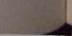

"Kıvırcık," dedim "Bessle'ye derine dalmasını ve orada kalmasını söyle!''
"Möööööö!" diyerek Kıvırcık sözlerimi çevirdi. Bessie'nin anlamasını ummak dışında bir şansım yoktu.
"İnek..." diye mırıldandı Thalla, hâlâ şaşkın bir haldeydi.
"Gel haydi!" İskeledeki alışveriş merkezine çıkan merdivenler boyunca Thalia'yı sürükledim. En yakındaki dükkanın köşesinden döndük. Mantikorun yardakçılarına bağırdığını duyuyorduk: "Yakalayın onları!" Muhafızlar körlemesine ateş açmaya, turistler bağırmaya başladı.
İskelenin ucuna sürünerek ilerledik. İçi hediyelik kristal eşyalarla dolu bir büfenin altına sakladık. Büfede hani şu kapıya asılınca ses çıkaran kristaller, düş kapanları, benzeri ıvır zıvır vardı; hepsi de güneş ışığıyla parlıyordu. Hemen yanımızda bir su fıskiyesi duruyordu. Altımızda ise kayalara yatmış ayıbalıkları güneşleniyordu. Tüm San Francisco Körfezi önümüze açılıyordu: Golden Gate Köprüsü, Alcatraz Adası ve kuzeyde ise yeşil tepelerle sis vardı. Bu kusursuz bir manzaraydı; tabii, ölmek üzere olmamız ve dünyanın sona erecek olması hariç.
"İskeleden atla!" dedi Zoé bana. "Denizde kaçabilirsin Percy. Babandan yardım dile. Belki sen Ophlotaurus'u kurtarabilirsin."
Haklıydı ama bunu yapamazdım.
"Sizi bırakmayacağım çocuklar," dedim. "Anca beraber, kanca beraber."
"Kampa haber ulaştırmalısın!" dedi Kıvırcık. "En azından neler döndüğünü bilsinler!"
Sonra gün ışığında gökkuşakları saçan kristalleri fark ettim. Yanımda da bir fıskiye vardı...
"Kampa haber ulaştırmak ha?" diye mırıldandım kendi 230
NymphE
kendime. "İyi fikir
Dalgakıran'ın kapağını kaldırdım ve fıskiyenin tepesini biçtim. Patlayan borudan su fışkırdı ve üstümüze püs-kürdü.
Su yüzüne çarpınca Thaila'nın nefesi kesildi. Sanki az önce gözlerine perde İnmişti ve şimdi kendine gelmişti.
"Deli misin sen?" diye sordu.
Ama Kıvırcık anladı. Çoktan ellerini cebine atmış, sikke arıyordu. Püsküren suların arasında oluşan gökkuşağına altın bir drahmi attı ve bağırdı: "Ey Tannça, kabul eyle ada-
ğımı"
Sis dalgalandı.
"Melez Kampı," dedim.
Ve orada, yanı başımızda, Sisin içerisinde en son görmek istediğim insan belirdi: Bay D. leopar desenli şortunu giymiş, buzdolabını karıştırıyordu.
Tembelce başım kaldırdı. "Müsaade eder misiniz?"
"Kheiron nerede?" diye bağırdım.
"Ne kabasın." Bay D. üzüm suyu kavanozunu kalasına dikti. "Böyle mi merhaba denilir?"
"Merhaba," diyerek düzelttim. "Ölmek üzereyiz! Kheiron nerede?"
Bay D. şöyle bir düşündü. Acele et diye bağıracaktım ama işe yaramayacağını biliyordum. Arkamızdan ayak sesleri ve bağırtılar geliyordu; mantikorun askerleri yaklaşı-
yordu.
"ölmek üzeresiniz demek," dedi Bay D. ve keyifle hülyalara daldı. "Ne heyecan verici Ne yazık ki Kheiron bunda değil. İsterseniz mesaj bırakın, ileteyim?"
Dostlarıma baktım. "Sonumuz geldi"
Thalia mızrağını kavradı. Yine o eski, öfkeli haline dön-231
NymphE
müştü. "O halde savaşarak ölürüz."
"Ne asilce," dedi Bay D. ve esnerken ağzını kapadı. "Peki sorun ne tam olarak?"
Bir faydası olmayacak diye düşünsem de Bay D.'ye Ophlotaurus'u anlattım.
"Hımmm," Buzdolabının İçindekileri gözden geçirdi
"Demek mesele buymuş. Anlıyorum."
"Umurunda bile değil!" diye bağırdım. "Ölmemizi izle, meyi yeğlersin!"
"Bir bakalım. Düşünüyorum da bu gece tam pizza havam-dayım."
Gökkuşağını kılıcımla biçip bağlantıyı kesmek istiyordum ama buna bile vaktimiz yoktu. Mantikor bağırdı: "Oradalar!"
Ve bir anda çevremiz kuşatıldı. Arkasında iki tane muhafız duruyordu. Diğer ikisi iskele dükkanlarının çatılarında belirdi. Mantikor trençkotunu çıkarttı ve asıl kimliğine dönüştü. Aslan pençeleri uzandı ve zehirli dikenlerle dolu kuyruğu dikildi.
"Mükemmel," dedi. Sisteki görüntüye göz ucuyla baktı ve homurdandı. "Yapayalnızlar. Gerçek bir yardım eli de uzak. Harikulade."
"Yardım dileyebilirsiniz," diye bana fısıldadı Bay D. Sanki bunu düşünmek onu eğlendirmişti. "Lütfen diyebilirsiniz."
Ancak yaban domuzlan uçmaya başladığı zaman yardım isterim senden, diye döşündüm. Sırf biz kurşunlanırken gülebilsin diye Bay D. gibi bir ahmaktan yardım dilenirken ölmeyi kabullenecek değildim.
Zoe oklarını gerdi. Kıvırcık, flütünü ağzına götürdü. Thalia kalkanını kaldırdı, gözlerinden bir damla yaşın indiğini gör-düm. Bir anda durumu kavradım: bu Thalia'nın başına daha önce de gelmişti. Melez Tepesi'nde köşeye sıkıştırılmıştı.